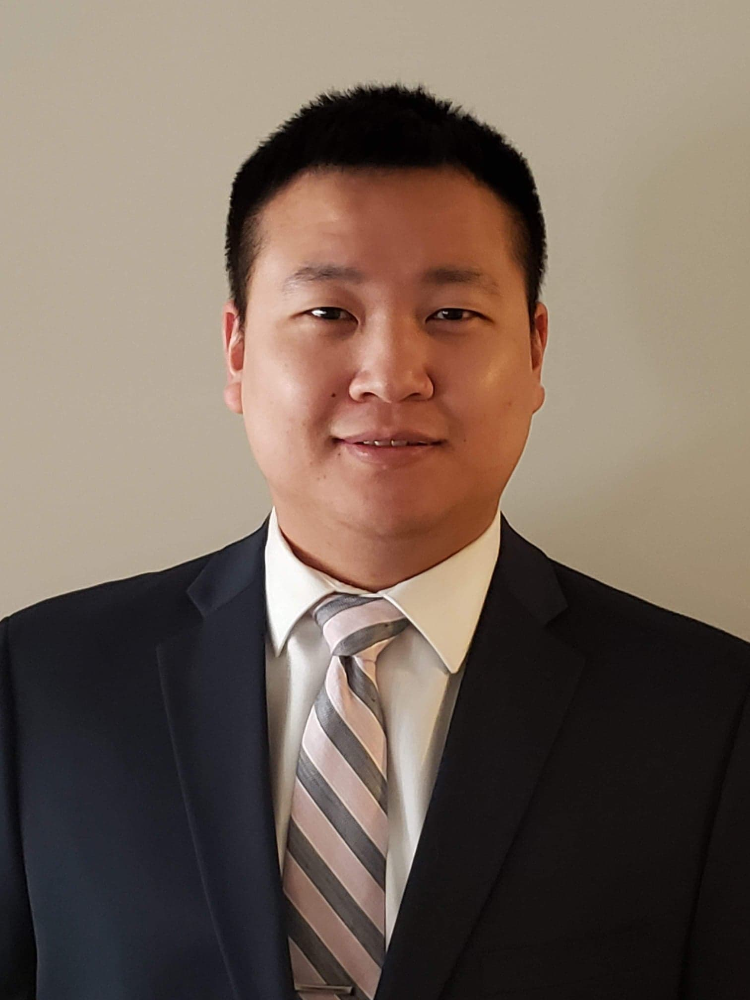

In my portfolio you will be able to view my current and finished projects. It is my goal to show the developer I am today. With all the technology there is to offer, this site will continue to change as I learn more.
With a strong passion for technology, I'm leaping into the IT world and follow my dream. To start my journey as a developer, I have attended and received certification of Full Stack Developer at GA Tech. Actively seeking an opportunity where I can learn and grow as Front End Developer. I have knowledge of HTML, CSS, Javascript and React.js. The Full Stack Developer course had also exposed me to MySql and MongoDB as well.
I’m creative and enjoy exploring new ideas to problem solving. My goal is to join a talented team to further learn and polish my skills as a Front-End Developer, same as where my concentration was in a group project with three other members. I’m excited to continue my learning and develop my skills to build a better site and user experience.